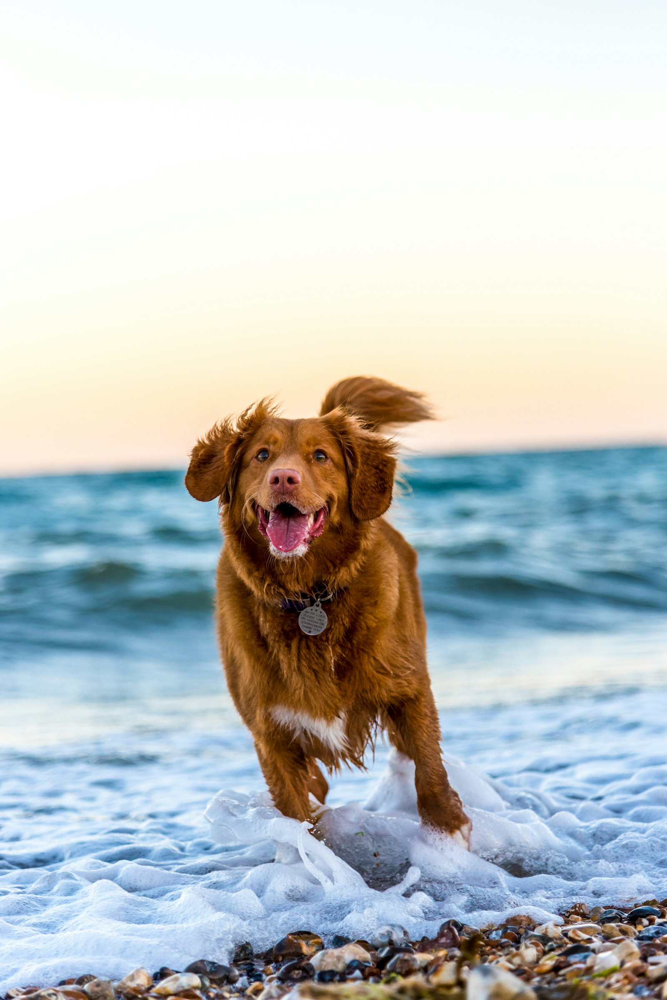
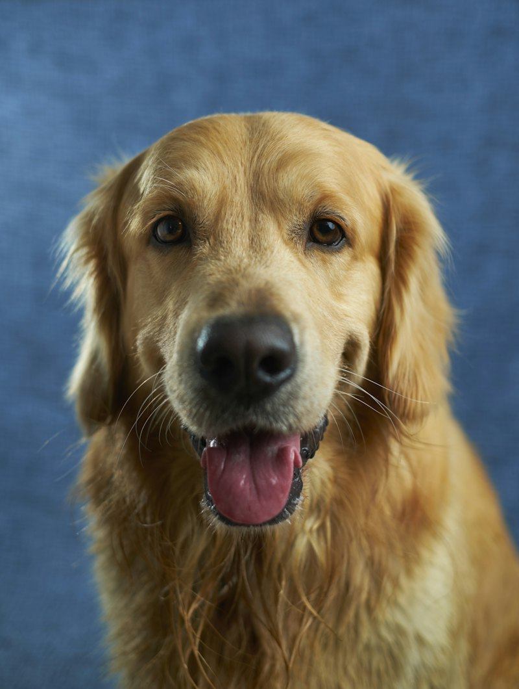
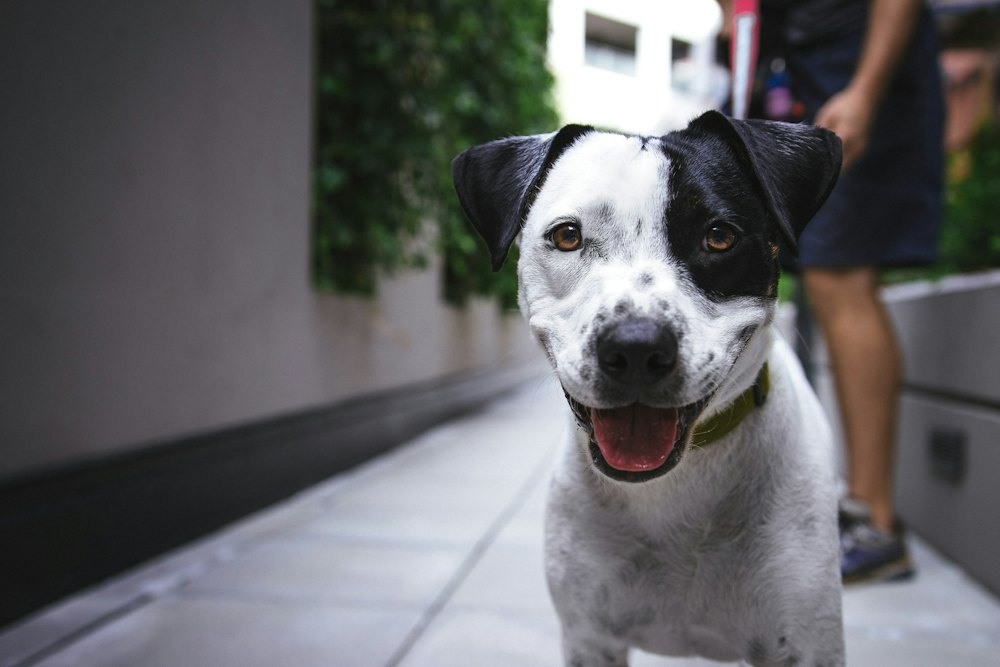

Your dog’s 20-minute reset, every single day.
Friendly, reliable walks around Haarlem from one walker who actually turns up — same face, same routine, and a photo in your phone before you’ve finished your coffee.
Free to meet, no commitment — we see if your dog likes me first.
- Same walker every time
- Photo & note after each walk
- Always on the lead
- Haarlem & nearby
How it works
Three steps, and none of them are complicated
No apps, no accounts, no ten-minute sign-up form. Just a message, a coffee, and a routine that sticks.
Tell me about your dog
Fill in the short form — your dog’s name, your neighbourhood, and the days that would suit you. Takes about a minute.
We meet, properly
I come to you. We sort out keys, routes, habits and quirks, and your dog decides whether I pass. It’s free, and there’s no obligation either way.
Walks, and proof
Your regular slot goes in the diary. After every walk you get a photo, the route, and a line on how they got on.
The walk promise
What you can actually count on
Dog walking runs on trust, and trust is built out of small, boring, repeated things.
The same face, every time
It’s me. Not a rota, not whoever was free. Your dog learns my footsteps.
Honest about the weather
No walks in heat, thunder or ice. If it’s not safe, we don’t go, and you’re not charged.
Nothing hidden
Prices are on this page. No surcharges for evenings or weekends, no surprises on the bill.
Availability
Here’s when I’m free
Have a look for a gap that suits you, then ask for an introduction and I’ll confirm it with you.
Grey means busy. Everything else is open.
This is my diary, not a booking system — nothing here is reserved until we’ve met and agreed it. I need at least 12 hours’ notice, and I’ll always come back to you within 12 hours.
Prices
Simple, and on the page
No subscriptions, no joining fee, and the same price whatever day it is.
Meet your walker
Hi, I’m Jean
I grew up on a farm in South Africa and moved to the Netherlands about three years ago. I now live in Haarlem, and I love it here: the canals, the parks and the dunes nearby.
I’ve had a soft spot for dogs my whole life. I grew up with a Weimaraner called Sabrina, so I know how much energy, personality and affection a dog can have, and how much a good walk matters.
I lead an active lifestyle, so time outside with your dog is the best part of my day. I work in business consulting with a flexible schedule, which lets me offer reliable, regular slots, and I cycle to you.
Walkies & Co. is new, and I’m building it the way I’d want my own dog looked after: we meet first, so I know your dog and your routine; your dog is always on a lead; and you get a photo and a short note after every walk.
I’m also learning Dutch, so don’t be surprised if I practise a word or two!


Where I walk
Haarlem, and the bits around it
- Haarlem Centrum
- Haarlem Noord
- Haarlem Oost
- Haarlem Zuid
- Schalkwijk
I cycle to you, so if you’re a little outside these, just ask — there’s a good chance I can still reach you. Favourite routes so far: the Haarlemmerhout, Kenaupark and along the Spaarne.
Questions
The things people ask
Can I book a walk straight from the website?
No, and that’s deliberate. Every dog starts with a free introduction session so I can meet you both first. Once we’ve met and agreed a routine, I put your walks in the diary myself. The calendar on this page shows you when I’m free, but nothing is reserved until we’ve actually spoken.
What happens at the introduction session?
It takes about 15 minutes and it’s completely free. I come to you, we meet, I meet your dog, and we go through the details — vet, health, habits, what sets them off, keys and routes. If it feels right for all three of us, we agree your slots there and then.
What if the weather is bad?
I don’t walk in heat, thunderstorms or ice — it isn’t safe, and a hot pavement does real damage to paws. If I have to skip a walk for weather I’ll message you, and you aren’t charged.
How do I pay?
We’ll sort that out at the introduction session — it’s straightforward, and there’s nothing to set up in advance.
Do you take reactive or nervous dogs?
I’m starting with friendly, healthy, lead-trained dogs. If your dog has a bite history or serious reactivity, I’d rather be honest and say it isn’t the right fit yet than take a risk with them. Do ask, though — nervous isn’t the same as reactive, and plenty of shy dogs do brilliantly with a calm, predictable routine.
Do you speak Dutch?
I’m learning! I work in English, which suits a lot of people here, and I’m always happy to practise a few words with you.
What if I need to cancel?
Life happens — just let me know. If it’s more than 12 hours ahead there’s no charge at all. Under 12 hours it’s half the walk price, because the slot has usually gone by then.
Shall we meet?
Book a free introduction session, lock in your time slot, and let your dog have the final say.